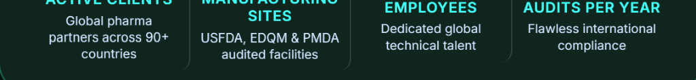

A Strategic Showcase of Website Sections, User Flows & Data Pathways

Visionary Leadership & Governance
From 1994 to Global API Titan
Purity, Reliability & Sustainability
Affordable Medical Support
Empowering Future Generations
Sustainable Village Infrastructure